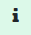

Instrucciones de uso del simulador de producción fotovoltaica
individual
Paso 1- Localización:
Debemos identificar la coordenadas latitud, longitud donde se realizará la instalación, para lo que hay varias opciones:
a) Mediante el desplazamiento en el mapa.
b) Identificando una zona o dirección exacta en el campo <Localización>
Una vez que se visualiza el lugar exacto, dar un doble-click con el ratón que permitirá completar el campo Long-Lat.
En este momento la aplicación esta lista para iniciar el cálculo solicitando a PVGIS que determine la orientación e inclinación óptima.
Si lo sabes, puedes indicar un segundo punto que informe la orientación este-oeste de las placas, para lo que te puedes ayudar de la vista satélite.
También, si lo sabes puedes introducir en el campo <Inclinación> el ángulo con respecto al suelo.
Una vez completados estos datos puedes dar al botón “Siguiente”
Paso 2 – Datos de consumo:
Selección del tipo de tarifa (2.0TD o 3.0TD) que se utilizará en la simulación. Verificar los precios. Se proponen inicialmente los de SOM Energia. Si no son los correctos se actualizarán a los valores que sean adecuados antes de realizar el cálculo.
· Si tienes fichero CSV con consumos horarios obtenidos de tu empresa distribuidora, selecciona la opción (Fichero de consumo individual) y cárgalo mediante el botón <Elegir archivo>
· Si no lo tienes usa la opción Perfil tipo REE e introduce el consumo anual de la finca.
Verás un mapa coloreado con tu perfil de consumo.
Una vez alcanzado este punto puedes dar al botón “Siguiente”
Paso 3:
Se observarán los resultados de la primera propuesta en las pestañas <Balance Energía>, <Balance económico> y <Gráficos> habiendo utilizado los valores económicos con las tarifas definidas en el paso 2.
Paso 4:
En la pestaña <Balance económico> se completarán los datos correspondientes a las posibles subvenciones que pueda disfrutar la instalación teniendo en cuenta que la subvención UE está limitada a que la producción anual de los paneles no sea superior al 80% del consumo anual.
En el caso del IBI se puede indicar el valor abonado y, según el municipio de que se trate, cuál es el porcentaje que se subvenciona y por cuántos años.
Paso 5:
Se pueden hacer varios ciclos de pruebas cambiando la configuración de la instalación <Paneles> o <Potencia por panel>. Este cambio se puede hacer desde la pestaña <Balance energía> o desde el gráfico de Alternativas en la pestaña <Balance Económico>. La aplicación realizará los cálculos correspondientes de forma automática.
Paso 6:
En la pestaña <Parámetros>, que se activa desde el icono de herramientas, se pueden actualizar varios parámetros utilizados en el cálculo. Quizás el mas importante sea el precio de euro por kWp instalado. Los cambios realizados en esta pestaña se reflejarán en el próximo cálculo.
Desde el menú situado en la parte superior derecha se pueden seleccionar las siguientes opciones, de izquierda a derecha:
| Formulario de contacto desde donde nos puedes enviar tus comentarios, así como informar de posibles errores o mejoras que consideres oportunas. | |
 |
Genera un informe en PDF de la simulación activa. |
 |
Herramientas para cambiar alguno de los parámetros utilizados por la aplicación. |
|  | Abre este documento. |
 |
Habilita un panel a la derecha de la pantalla con una guía explicativa de la pestaña en la que te encuentres en ese momento. |